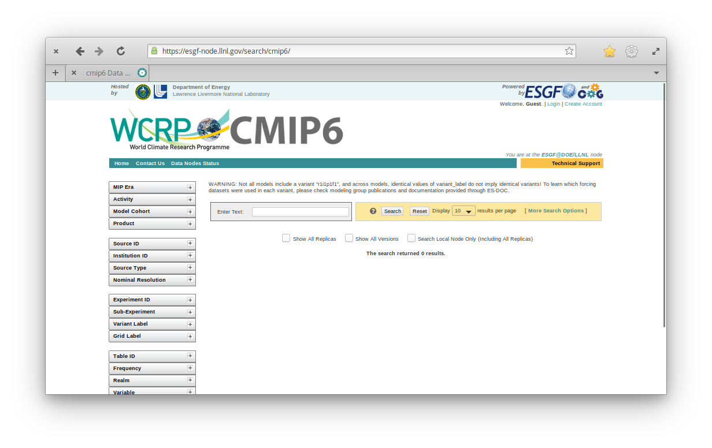
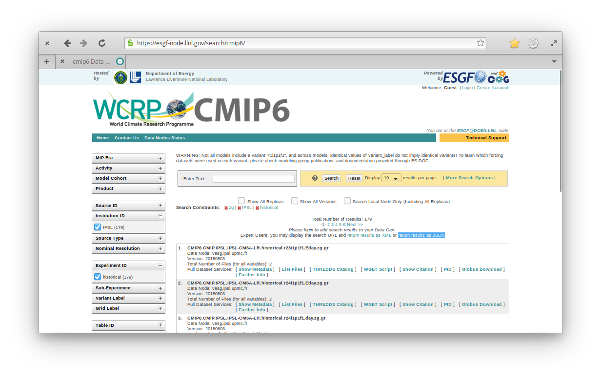
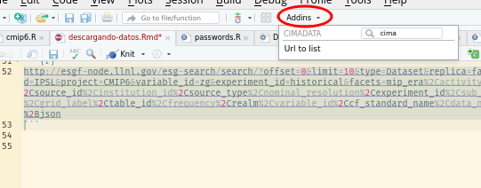

descargando-datos.RmdLo primero es ir a https://esgf-node.llnl.gov/search/cmip6/ donde nos encontramos con algo así

En esa página, realizamos una búsqueda utilizando los filtros de la izquierda. Por ejemplo, podemos buscar datos producidos por el IPSL, para las corridas históricas y nos interesa la variable “zg” (geopotencial).

Debajo de la cantidad de resultados hay un link que dice “return results as JSON”. Si hacemos click derecho -> copiar link, obtenemos esto:
Que si se pasa por cmip_url_to_list() nos da una lista interpretable y modificable.
cmip_url_to_list("http://esgf-node.llnl.gov/esg-search/search/?offset=0&limit=10&type=Dataset&replica=false&latest=true&institution_id=IPSL&project=CMIP6&variable_id=zg&experiment_id=historical&facets=mip_era%2Cactivity_id%2Cmodel_cohort%2Cproduct%2Csource_id%2Cinstitution_id%2Csource_type%2Cnominal_resolution%2Cexperiment_id%2Csub_experiment_id%2Cvariant_label%2Cgrid_label%2Ctable_id%2Cfrequency%2Crealm%2Cvariable_id%2Ccf_standard_name%2Cdata_node&format=application%2Fsolr%2Bjson")
#> $type
#> [1] "Dataset"
#>
#> $replica
#> [1] "false"
#>
#> $latest
#> [1] "true"
#>
#> $institution_id
#> [1] "IPSL"
#>
#> $project
#> [1] "CMIP6"
#>
#> $variable_id
#> [1] "zg"
#>
#> $experiment_id
#> [1] "historical"Para hacer esto más fácil, se puede seleccionar la url y usar el Addin “Url to list” para que nos pegue el código necesario y prolijo.

Que devuelve este código:
query <- list(
type = "Dataset",
replica = "false",
latest = "true",
institution_id = "IPSL",
project = "CMIP6",
variable_id = "zg",
experiment_id = "historical"
)Ahora podemos usar esta lista como base para agregarle más variables, otras instituciones u otros modelos. Para ver qué datos hay, pasamos esa query a cmip_search(). El resultado es una lista enorme, pero con as.data.frame() lo podemos convertir en una tabla.
resultado <- cmip_search(query)
resultado_df <- as.data.frame(resultado)
head(resultado_df)
#> source_id experiment_id forcing_index physics_index
#> 1 IPSL-CM6A-LR historical 1 1
#> 2 IPSL-CM6A-LR historical 1 1
#> 3 IPSL-CM6A-LR historical 1 1
#> 4 IPSL-CM6A-LR historical 1 1
#> 5 IPSL-CM6A-LR historical 1 1
#> 6 IPSL-CM6A-LR historical 1 1
#> initialization_index realization_index frequency datetime_start
#> 1 1 23 day 1950-01-01T12:00:00Z
#> 2 1 24 day 1950-01-01T12:00:00Z
#> 3 1 24 day 1950-01-01T12:00:00Z
#> 4 1 25 mon 1850-01-16T12:00:00Z
#> 5 1 25 day 1950-01-01T12:00:00Z
#> 6 1 25 day 1850-01-01T12:00:00Z
#> datetime_stop variable_id nominal_resolution grid_label
#> 1 2014-12-31T12:00:00Z zg 250 km gr
#> 2 2014-12-31T12:00:00Z zg 250 km gr
#> 3 2014-12-31T12:00:00Z zg 250 km gr
#> 4 2014-12-16T12:00:00Z zg 250 km gr
#> 5 2014-12-31T12:00:00Z zg 250 km gr
#> 6 2014-12-31T12:00:00Z zg 250 km grz
#> size
#> 1 18415.4458
#> 2 18411.2428
#> 3 7992.6212
#> 4 1451.3999
#> 5 18412.1183
#> 6 409.1184Acá podemos usar resultado_df para seleccionar y filtrar los modelos que realmente queremos bajar, y luego refinar la búsqueda o simplemente hacer un subset en los elementos de resultado.
Para bajar los resultados, primero es más cómodo setear globalmente el directorio donde vamos a alojar nuestros datos:
Y luego bajar con cmip_download()
Con esto obtenemos los datos “crudos”, que pueden incluir archivos separados para distintos intervalos de tiempo y cada miembro de un ensamble. Para consolidar esos datos en un solo archivo cada uno, hay que hacer un último paso:
Y listo! En ~/DATOS/CMIP6 vas a tener la estructura de datos listo para ser usada.
Para listar los archivos dispoibles en una determinada carpeta (por default, la seteada con cmip_folder_set()) hay que usar
datos <- cmip_available()
datos
#> experiment_id frequency variable_id source_id initialization_index
#> 1 historical mon zg CNRM-CM6-1 1
#> 2 historical mon zg CNRM-ESM2-1 1
#> 3 historical mon zg IPSL-CM6A-LR 1
#> 4 historical mon zg MIROC6 1
#> 5 historical mon zg MRI-ESM2-0 1
#> physics_index forcing_index grid_label datetime_start datetime_stop
#> 1 1 2 gr 185001 201412
#> 2 1 2 gr 185001 201412
#> 3 1 1 gr 185001 201412
#> 4 1 1 gn 185001 201412
#> 5 1 1 gn 185001 201412
#> file
#> 1 ~/DATOS/CMIP6/historical/mon/zg/zg_Amon_CNRM-CM6-1_historical_i1p1f2_gr_185001-201412.nc4
#> 2 ~/DATOS/CMIP6/historical/mon/zg/zg_Amon_CNRM-ESM2-1_historical_i1p1f2_gr_185001-201412.nc4
#> 3 ~/DATOS/CMIP6/historical/mon/zg/zg_Amon_IPSL-CM6A-LR_historical_i1p1f1_gr_185001-201412.nc4
#> 4 ~/DATOS/CMIP6/historical/mon/zg/zg_Amon_MIROC6_historical_i1p1f1_gn_185001-201412.nc4
#> 5 ~/DATOS/CMIP6/historical/mon/zg/zg_Amon_MRI-ESM2-0_historical_i1p1f1_gn_185001-201412.nc4
#> n_members lon_res lat_res n_levs size
#> 1 10 1.40625 1.406250 19 23516427997
#> 2 5 1.40625 1.406250 19 11763026349
#> 3 32 2.50000 1.258741 19 48682698482
#> 4 10 1.40625 1.406250 19 22850319498
#> 5 5 1.12500 1.125000 19 17649975709Ahí se obtiene una tabla con los distintos experimentos, modelos, variable, etc… descargados y consolidados junto con el archivo. Si uno estuviera interesado en los modelos del IPSL, eligiría esos dos:
Y ahora sólo queda leer los datos con la herramienta que uno prefiera. Por ejemplo